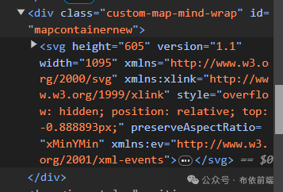
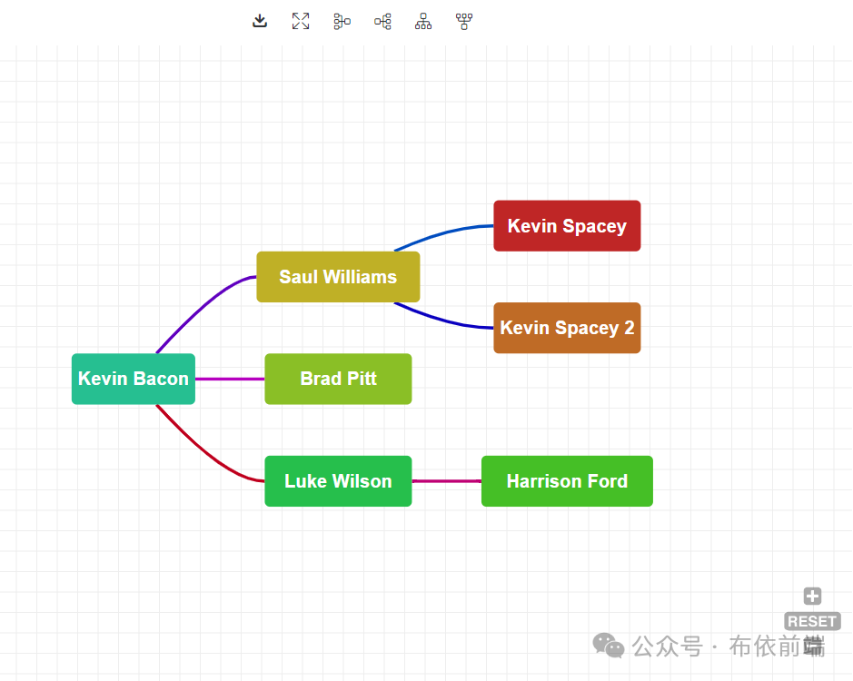
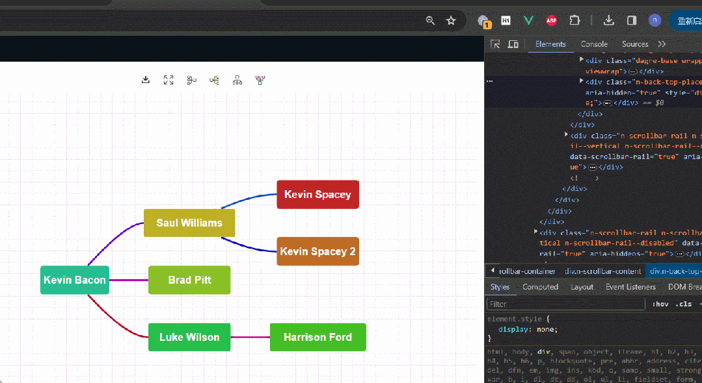
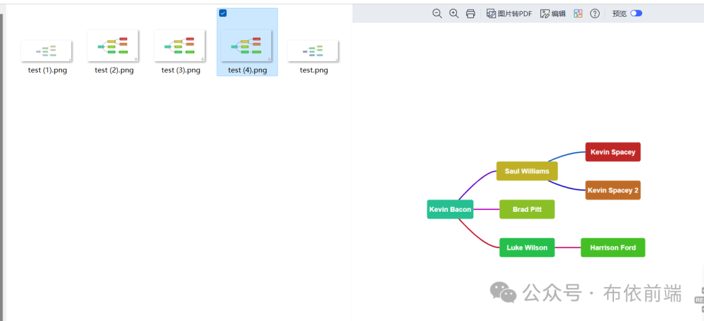

在 Web 开发中，我们经常遇到需要将 SVG（可缩放矢量图形）转换为 Canvas 的场景，例如，你可能想把一个 SVG 图表转换为 Canvas 以便可以对其进行更高级的操作，或者下载到本地。这时，你就需要用到一个强大的 JavaScript 库: canvg。
canvg 是一款可以将 SVG 语法解析并转为 Canvas 绘制语法的 JavaScript 库。这意味着你可以使用它将 SVG 图形 “绘制” 到 <canvas> 元素上。这个库能够解决许多 SVG 无法直接复制到 Canvas 的问题，因为 SVG 与 Canvas 使用的绘制语法是有区别的。
当前操作环境是 VUE3 + VITE5，假如已经创建了 SVG 元素并绘制了很多内容，用户希望导出当前 SVG 内容，方便打印成纸质版。此时，canvg 施展才华的时候就到了。确保项目安装了 canvg 依赖，完整安装命令如下：
npm install --save canvg
导入依赖到 vue 文件:
import { Canvg, presets } from "canvg";
初始化 canvg 配置:
const preset = presets.offscreen();
SVG 内容如下:
<div class="custom-map-mind-wrap" id="mapcontainernew"></div>

页面效果如下:

canvg 将 SVG 转换成图片的逻辑如下：
function exportPng() {
const container = document.querySelector("#mapcontainernew");
const svgDom = container.querySelector("svg");
const img = document.querySelector("img");
svgDom.removeAttributeNS(null, "xmlns:xlink");
svgDom.removeAttributeNS(null, "xmlns:ev");
const { width: svgWidth, height: svgHeight } = svgDom.getBoundingClientRect();
// 将svg转换成图片可以预览
toPng({
width: svgWidth,
height: svgHeight,
svg: svgDom.outerHTML,
}).then((pngUrl) => {
// img 图片标签页面自定义即可
// img.src = pngUrl
});
}
async function toPng(data) {
const { width, height, svg } = data;
const canvas = new OffscreenCanvas(width, height);
const ctx = canvas.getContext("2d");
const v = await Canvg.from(ctx, svg, preset);
// Render only first frame, ignoring animations and mouse.
await v.render();
const blob = await canvas.convertToBlob();
const pngUrl = URL.createObjectURL(blob);
return pngUrl;
}
利用 canvg 将 SVG 转换成图片，获取 SVG 的 dom 结构，并获取 SVG 的真实宽高赋值给 OffscreenCanvas 接口，构建出相等宽高的 canvas 对象，在通过 canvg.from 接口进行 svg 内容转换便可以得到 png 图片了，精彩继续...
要想下载 canvg 转换好的 SVG 图片，需要借助 A 标签实现，通过 A 标签模拟下载功能，浏览器就可以下载保存图片了。
需要在 toPng 方法内部做些更改，完整代码如下：
async function toPng(data) {
const { width, height, svg } = data;
const canvas = new OffscreenCanvas(width, height);
const ctx = canvas.getContext("2d");
const v = await Canvg.from(ctx, svg, preset);
// Render only first frame, ignoring animations and mouse.
await v.render();
const blob = await canvas.convertToBlob();
const pngUrl = URL.createObjectURL(blob);
// 模拟下载
const a = document.createElement("a");
a.style.display = "none";
document.body.append(a);
a.href = pngUrl;
a.download = "test.png";
a.click();
window.URL.revokeObjectURL(a.href);
document.body.removeChild(a);
return pngUrl;
}
下面是真实下载 SVG 的 png 格式过程截图。

在本地下载文件夹查看下载好的图片是这样子的：

总的来说，canvg 是一个理想的库，用于将 SVG 转换为 Canvas。通过使用 canvg，可以获得两个最大的好处。首先，利用 Canvas 具有的所有图形处理功能，如放大图像、应用滤镜等。其次，利用 Canvas 对象的 toDataURL() 方法将图像转换为 Base64 编码，从而使图像可以下载或以其他方式操控。因此，对于需要在前端进行 SVG 和 Canvas 转换的开发者来说，掌握 canvg 是非常实用的。